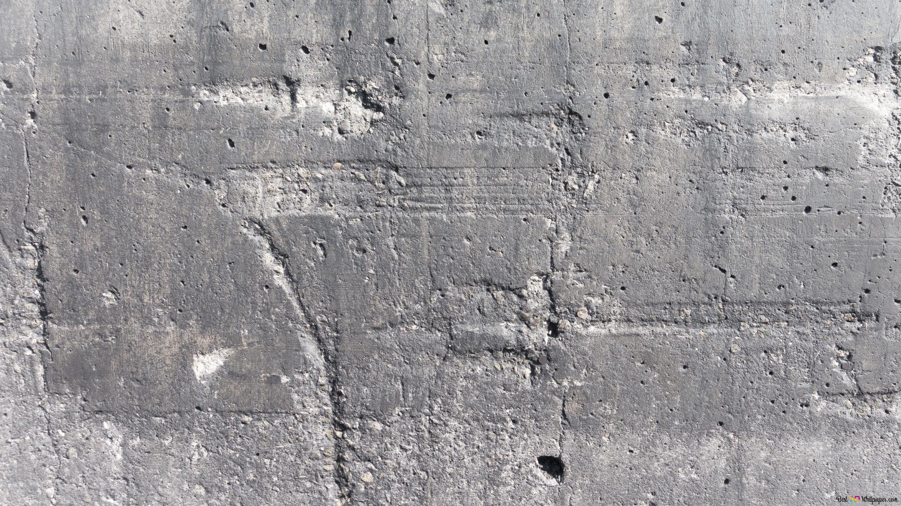

LA MAISON LEVCHIN
Une maison française de création
LEVCHIN est une maison française de création. Elle développe des objets de décoration, des accessoires et des vêtements pensés, dessinés et développés au sein de la maison, avec une même exigence de cohérence, de présence et de qualité.

Une naissance portée par une direction claire
Dès son origine, la maison s’est construite autour d’une intention précise : faire exister des créations qui se distinguent par leur justesse, leur force visuelle et leur caractère.
Chaque pièce prend place dans un ensemble plus large, avec le désir de bâtir un univers reconnaissable, suivi et durable, plutôt qu’une simple succession d’objets ou de vêtements.


La forme, la matière, la présence
Ici, la création commence par une idée, puis passe par l’exploration, le volume, le prototype, l’ajustement et le développement. Cette manière de faire donne aux pièces une présence réelle.
Le dessin compte, bien sûr, mais il s’accompagne toujours d’une attention portée à la matière, aux proportions, aux finitions et à la sensation laissée par l’objet une fois devant soi, sur soi, ou dans l’espace.
La maison s’écrit autour d’un langage clair, porté par la forme, la matière et la tenue des pièces dans le temps.
Une fabrication en accord avec la maison
La maison défend une fabrication française et des matériaux sourcés européens. Ce choix participe à une recherche de clarté, de qualité et de tenue.
Il accompagne aussi une vision plus juste de la production, pensée avec attention, dans le respect des matières, des procédés et du niveau d’exécution attendu.


Des pièces suivies, singulières, désirables
La maison accorde une place essentielle au caractère singulier de chaque création. Une pièce LEVCHIN se reconnaît par son dessin, par sa présence, par la qualité de son développement et par le soin apporté à sa fabrication.
Selon les matières, les finitions et la manufacture, un même modèle peut conserver des nuances subtiles d’une unité à l’autre. Cette vérité matérielle donne à chaque pièce une présence propre, et renforce le sentiment d’acquérir bien plus qu’un objet courant.
Une autre manière de proposer la création
La précommande occupe une place importante dans le fonctionnement de la maison. Elle permet de produire avec plus de précision, de suivre chaque création avec plus d’attention et de donner à la réception de la pièce une portée différente.
L’achat s’inscrit alors dans un rythme plus juste, plus engagé, plus proche de la manière dont la maison conçoit, fabrique et accompagne ses créations.

Une maison à suivre de près
La maison avance avec mesure, avec exigence, et avec le goût des choses qui prennent forme durablement. Suivre LEVCHIN, c’est entrer au plus près d’une naissance maîtrisée, découvrir les premières pièces, comprendre leur présence, et voir apparaître, collection après collection, un univers appelé à prospérer.